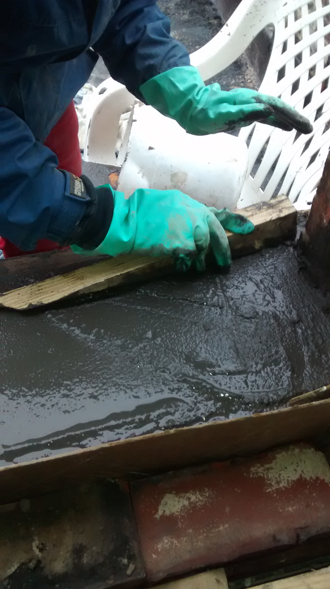

Project #1-Tuckpointing with Kesia
We had a huge turnout for the first skillshare. There wasn't really enough time but everyone got a turn.
We learned how to scrape old mortar with various tools
We learned how to mix mortar to the right consistency.
We practiced techniques for repointing the bricks.
Project #2- Insulating Pex with Mel
We had a great time crawling under my kitchen addition with our headlamps.
We wrapped my PEX waterline and heating wire with 1/2 foam pipe insulation
We got creative and used duct tape and brush-burn-inspired strength to hold it all together.
Project #3- Installing a window with Honna
We removed the window framing and rotted wooden sill down to the brick (saved the top).
We then added new wood between the vertical brick, holding it in with metal rods, using pressure from below.
Honna tuckpointed the bricks that needed some extra attention.
We created a new wooden frame for the new concrete sill using the same kind of metal rods as before to hold it in place.
We mixed concrete and sandmix in a wheelbarrow, and shoveled it into place.

I need to acquire more pictures of the window installation.
Project #4- Installing french doors with Mel
Honna and Bridget are rearing to go.
We discovered that hinge depth really does matter as we frustratingly shimmed it with cardboard.
We are all feeling very pleased with ourselves. They are great.